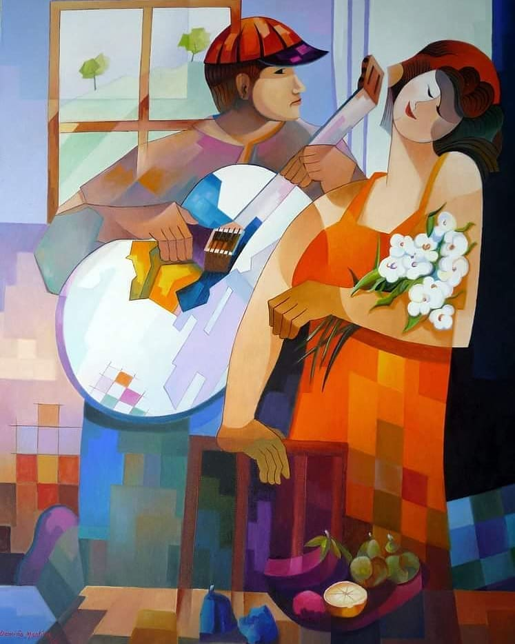

Quem foi Ivone Botelho?
Raízes e Crescimento
Nascida a 02 de Outubro de 1934, esta Grande Mulher viu pela primeira vez a luz do dia na Estrada do Desvio, Lumiar, Lisboa. Descendente de pais Alentejanos passou os primeiros anos da sua vida a tentar escapar à fome.
Em plena 2ªa guerra mundial, Ivone Botelho, a mais nova de cinco irmãos viveu uma época conturbada. Havia uma terrível escassez de géneros de primeira necessidade, racionamento severo que ia ficando mais curto à medida que a guerra se prolongava.
Descobertas e Paixões
Desde os primeiros passos, Ivone Botelho demonstrou uma paixão enorme pelo Teatro e o Fado. A zona onde habitava e depois mais tarde ter trocado Lisboa pela Margem Sul possibilitou Ivone a realizar alguns desses talentos que possuía.
Ainda bem nova fez Teatro e participou em Filmes Nacionais na década de 1950. Quem nunca teve a oportunidade de conhecer o seu talento pode ouvir o timbre e o estilo da sua vós através da sua sobrinha, a cantora Maria Armanda, artista de Revista e o tão popular Fado canção.
Amor, Família e Desafios
A entrada na sua vida de Agripino Botelho, [Cônjuge] Ivone trouxe consigo uma sinfonia de emoções e desafios compartilhados. Juntos, eles construíram um lar onde nem sempre o amor florescia e os dois pequenos corações. Élia hoje, [66 anos] e Emanuel Botelho [54 anos] ganhavam vida.
No entanto, os desafios também fizeram parte dessa jornada, desenhando as cicatrizes que testemunhavam a força inabalável da sua união.
Nas Trilhas da Carreira
Com grande necessidade, Ivone embarcou na carreira profissional. O seu caminho profissional começou primeiro por aprender costura de Alfaiate. No seu trajeto trabalhou para casas como A Lanalgo-Confeções, alta-costura, Loja emblemática em Lisboa. Mais tarde trabalhou na “CUF” tecidos, onde os desafios foram aceites como oportunidades de crescimento.
Ao longo dos anos, ela trilhou uma carreira notável neste setor. Com o tempo a “CUF”, após a sua nacionalização por ordem dos governos que se seguiram à revolução do 25 de Abril de 1974, foi desmembrada e enfraquecida e acabou por fechar.
Um novo caminho
Visto o seu cônjuge trabalhar na referida empresa, [CUF] e esta estar numa situação complicada Ivone, esta grande força da natureza empreendeu por outro caminho para ajudar a sua família.
Ivone começou por fazer pequenos biscoitos e salgados. Ela confecionava de madrugada e ia entregar logo pela manhã. Passado algum tempo já tinha uma boa carteira de clientes e o seu projeto teve algum sucesso.
Dificuldades
Certo dia, no decorrer do seu trabalho Ivone Botelho caiu, e toda a sua mercadoria que tanto trabalho tinha dado a confecionar espalhou-se toda pelo chão. Desanimada mas não vencida voltou para trás e recomeçou a fazer todo o produto que estava perdido. Com o tempo conseguiu comprar um espaço num mercado e foi assim até se aposentar.
A sua crença
Ivone tinha uma profunda fé na Bíblia e no Deus da Bíblia. Ajudou muitas pessoas a aprender mais sobre este Deus cujo nome é Jeová. Dedicou a maior parte do seu tempo a realizar o serviço de evangelização até já não ter forças para mais.
A Poesia
Como grande Artista que era, Ivone gostava muito de escrever. A sua Poesia era baseada em Versos com Rima. Quem a cria ver, a Ti Ivone com o seu caderno, uma lupa e uma caneta a recitar os seus versos. Ficava toda contente. Esta humilde mulher refugiava-se nas suas palavras e muitas vezes as lágrimas escorriam-lhe pela cara abaixo. Enfim só ela saberá o que lhe ia no íntimo.
Os seus olhos já não são o que eram os mesmos e a sua letra trémula mostrava a dificuldade que tinha em escrever mas não em se expressar. O desejo dela é que a sua mensagem fosse recebida de forma simples e que pudesse dar esperança ao leitor- esperança esta que ela tanto prezava.
Em 2014 Ivone escreveu um Livro como o Tema “Palavras da Minha Vida” com a colaboração do filho, [Emanuel] e um dos netos, [Márcio]. Já que falamos em netos eles são: -Da filha Élia: Rubem e Tito Ramos. -Do neto Tito a filha ou bisneta Lara. -Do filho Emanuel: Márcio Botelho.
Já no fim da sua vida, dois dias antes de falecer ainda se conseguiu tirar dela 5 versos que foram mencionados pelo orador na sua cerimónia fúnebre.
Reflexões e Legado
No tempo em que viveu, Ivone olhava para trás e compartilha as lições que a vida lhe ensinou. Valores como amor, carinho e respeito pelos outros, importância pelo trabalho e outros guiaram cada decisão, moldando uma vida de significado e propósito.
O legado de Ivone transcende as palavras desta biografia, ecoando nas vidas daqueles que tiveram a honra de conhecê-la, criando uma tapeçaria única de influência positiva. Quem vê os filhos consegue-se perceber a influencia que esta grande Senhora teve para com eles.